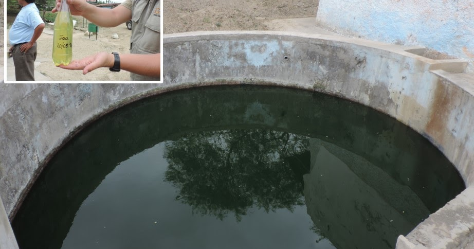
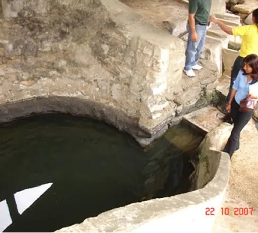

Embriagate en la Belleza Natural

- Paisajes de ensueño
- Aguas termales revitalizantes
- Cascadas vigorizantes
Descubre la Magia de las Aguas Azufradas

- Propiedades curativas
- Ritual de purificación
- Experiencia única
Tu Refugio de Bienestar
- Alojamiento confortable
- Gastronomía local
- Actividades complementarias
Planifica tu Visita
- Ubicación
- Cómo llegar
- Mejor época para visitar
Joa se encuentra a 6 km de Jipijapa, Manabí, Ecuador. Puedes tomar un taxi o bus desde Jipijapa. La carretera asfaltada llega hasta la entrada de la comunidad, luego es un corto trayecto a pie. Joa tiene un clima cálido todo el año, pero los meses secos de junio a octubre son ideales para disfrutar de las aguas termales.